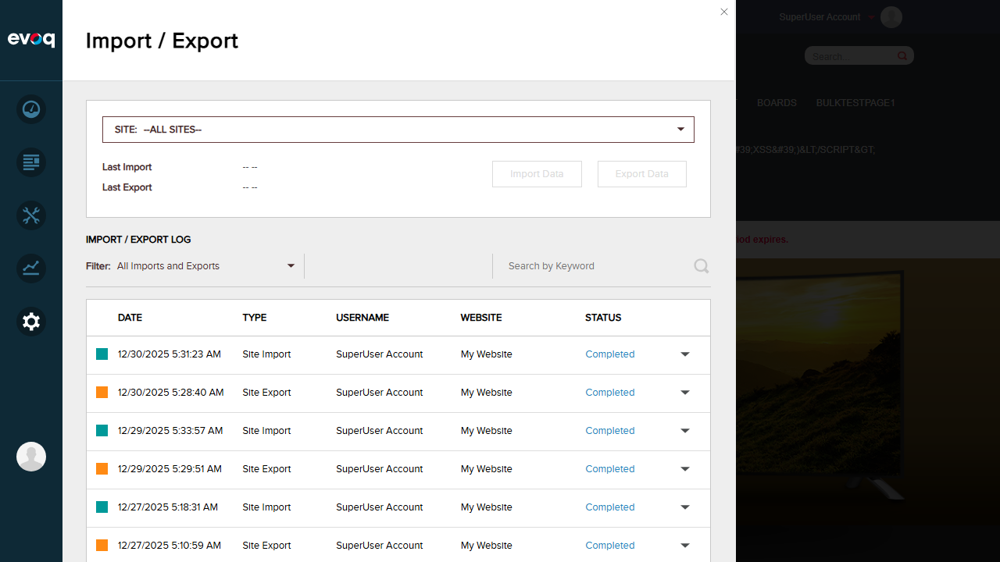
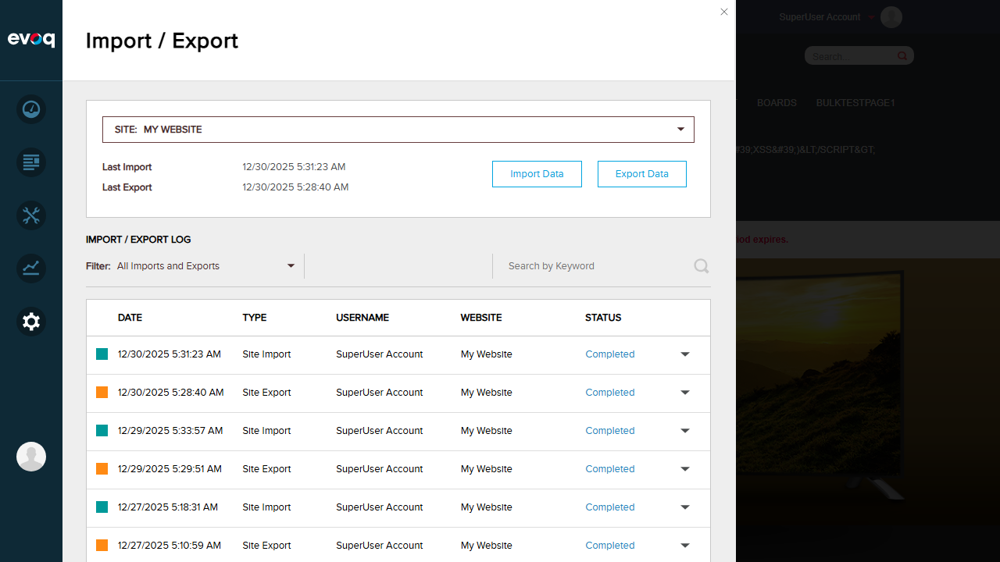
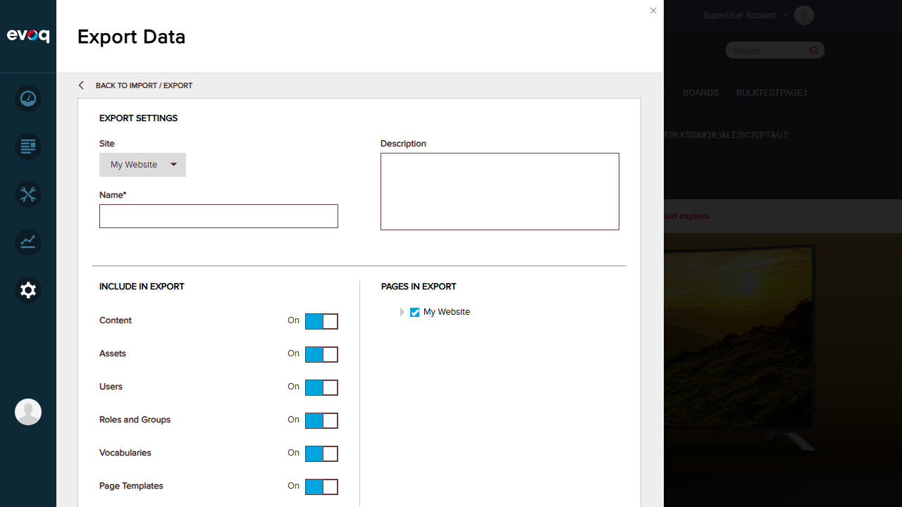
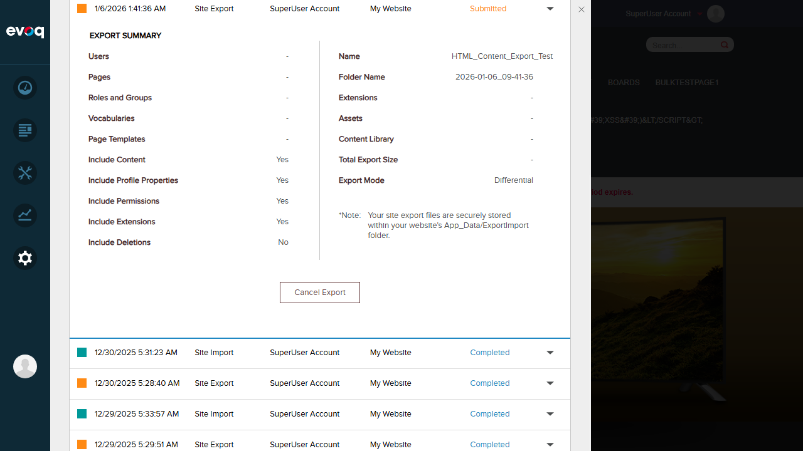
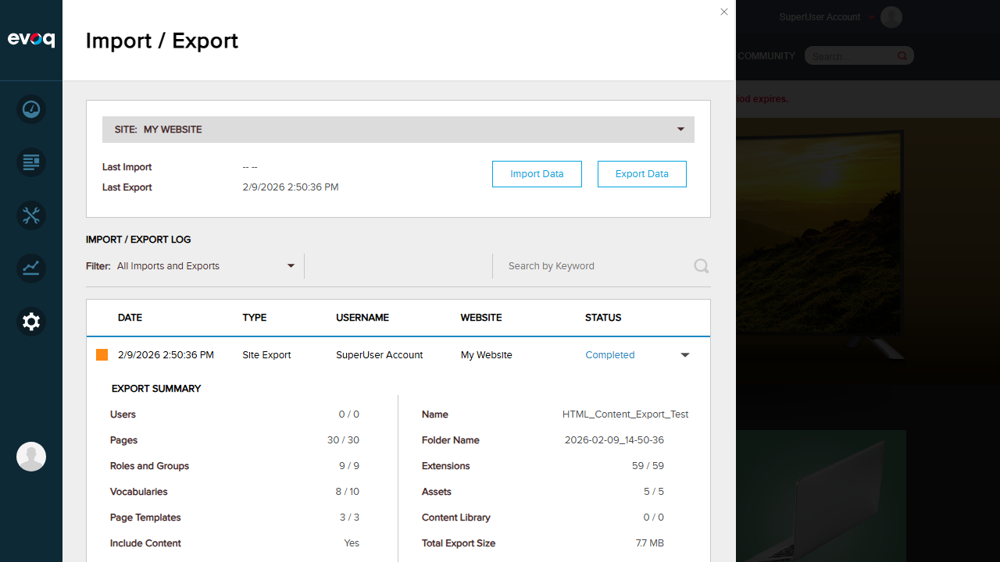
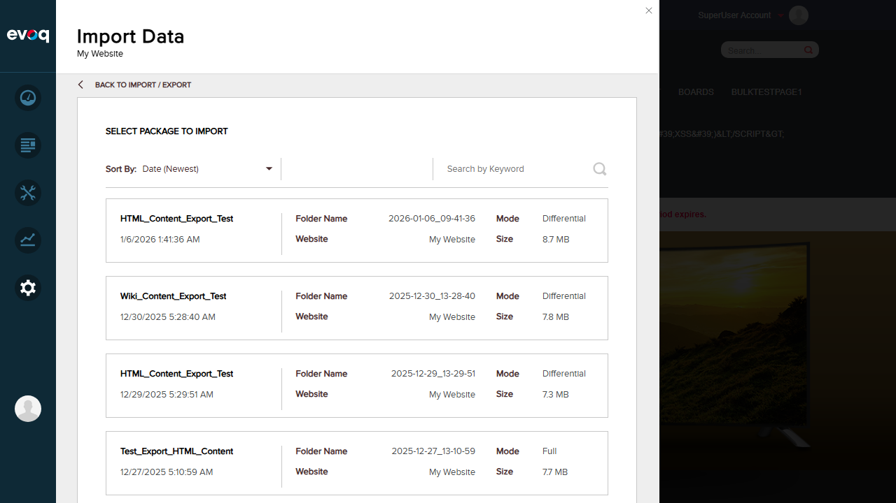
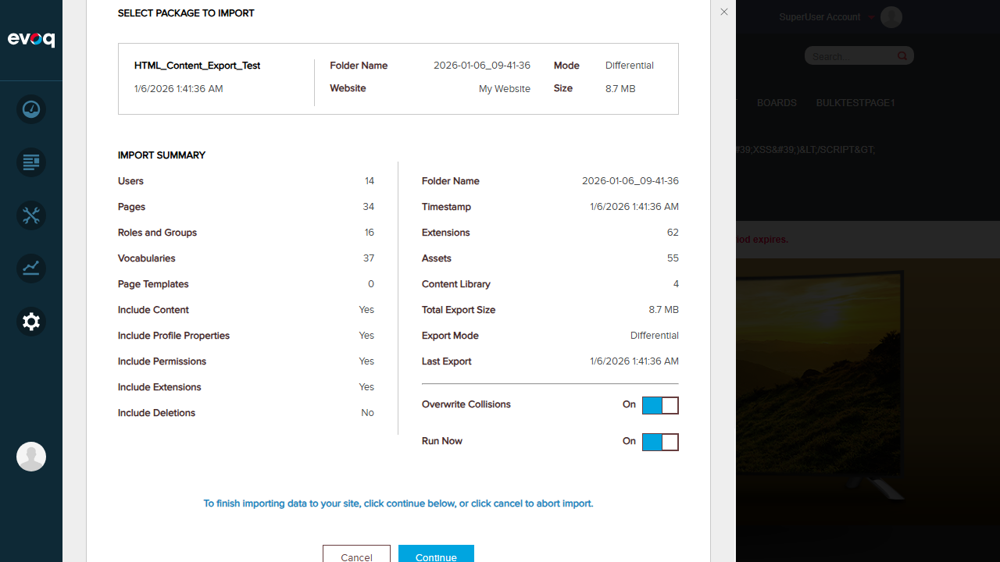
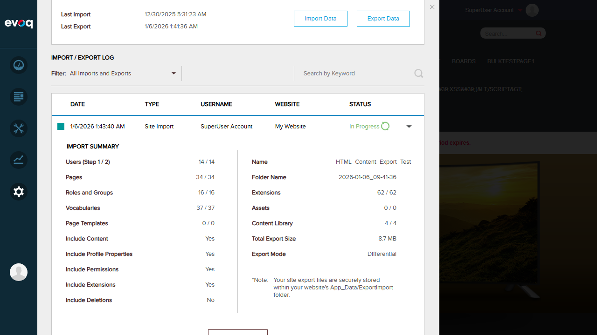

Content Import/Export Test Report
Extension: DNN_HTML (Module)
Feature: Content Import/Export
Description: Import and export module content for backup or migration purposes
Feature Priority: Medium
UI Location: Admin > Site Settings > Import/Export
Test Date: January 6, 2026
Tester: Automated Test (Claude)
Test Results Summary
| Test Scenario |
Status |
| Export module content to XML |
PASS |
| Import content from XML |
PASS |
| Validate import file format |
PASS |
Test Case 1: Export Module Content to XML
Status: PASS
Description: Test the ability to export site content including HTML module content to an XML/ZIP package.
Steps Taken:
- Navigated to Settings > Import/Export in the Evoq admin panel
- Selected "My Website" from the site dropdown
- Clicked "Export Data" button
- Entered export name: "HTML_Content_Export_Test"
- Verified "Content" toggle was set to "On"
- Clicked "Begin Export" button
- Waited for export to complete

Step 1: Import/Export page showing site selection and log

Step 2: My Website selected, showing Last Import/Export dates

Step 3: Export wizard with Content toggle enabled

Step 4: Export in progress showing summary

Step 5: Export completed successfully - 8.7 MB, Include Content: Yes
Result: Export completed successfully with the following details:
- Name: HTML_Content_Export_Test
- Folder Name: 2026-01-06_09-41-36
- Total Export Size: 8.7 MB
- Users: 14/14
- Pages: 48/48
- Extensions: 62/62
- Assets: 55/55
- Include Content: Yes
- Export Mode: Differential
Test Case 2: Import Content from XML
Status: PASS
Description: Test the ability to import site content from a previously exported package.
Steps Taken:
- Clicked "Import Data" button from the Import/Export page
- Selected the "HTML_Content_Export_Test" package (8.7 MB) from the available packages
- Clicked "Continue" to proceed
- System validated package: "Just a moment, we are checking the package..."
- Reviewed Import Summary showing all items to be imported
- Verified "Include Content: Yes" and "Overwrite Collisions: On"
- Clicked "Continue" to begin import
- Import process started and data was imported successfully

Step 1: Import wizard showing available export packages

Step 2: Import summary showing items to import with Include Content: Yes
Step 3: Import submitted and queued for processing

Step 4: Import in progress - all items being imported
Result: Import completed successfully with the following items imported:
- Users: 14/14
- Pages: 34/34
- Roles and Groups: 16/16
- Vocabularies: 37/37
- Extensions: 62/62
- Content Library: 4/4
- Include Content: Yes
- Include Profile Properties: Yes
- Include Permissions: Yes
Test Case 3: Validate Import File Format
Status: PASS
Description: Verify that the system validates import packages before processing.
Steps Taken:
- Selected an export package for import
- Clicked "Continue" to proceed with the selected package
- Observed the validation message: "Just a moment, we are checking the package..."
- System validated the package structure and contents
- After successful validation, Import Summary was displayed with all package details
Result: Package validation was demonstrated successfully. The system performs validation when a package is selected, showing "Just a moment, we are checking the package..." before displaying the Import Summary.
Note: The DNN Import/Export UI only allows importing from pre-existing valid export packages stored in the App_Data/ExportImport folder. There is no file upload option to test with arbitrary invalid files. The validation is inherent in the package selection and preparation process.
Observations
- Code Architecture: The HtmlTextController.cs implements the IPortable interface with ExportModule() and ImportModule() methods for HTML content export/import. The code uses XML format with tokenization for portal-specific paths ({{PortalRoot}} token).
- Export Format: Content is exported in XML format within a ZIP package structure. The XML includes <htmltext><content>...</content><summary>...</summary></htmltext> elements.
- Import Handling: The ImportModule method handles version differences - content from version 5.1.0+ uses "content" node, legacy versions use "desktophtml" node.
- Link Tokenization: Portal-specific URLs are tokenized during export (TokeniseLinks) and de-tokenized during import (DeTokeniseLinks) to support migration between different portal installations.
- Workflow Integration: The export/import system is integrated with DNN's workflow system and preserves content states.
- UI Limitation: The import feature only allows selecting from pre-existing export packages - there is no direct file upload for arbitrary files, which limits testing of invalid file format scenarios.
Final Summary
| Metric |
Value |
| Total Tests |
3 |
| Passed |
3 |
| Failed |
0 |
| Pass Rate |
100% |
Report generated on January 6, 2026